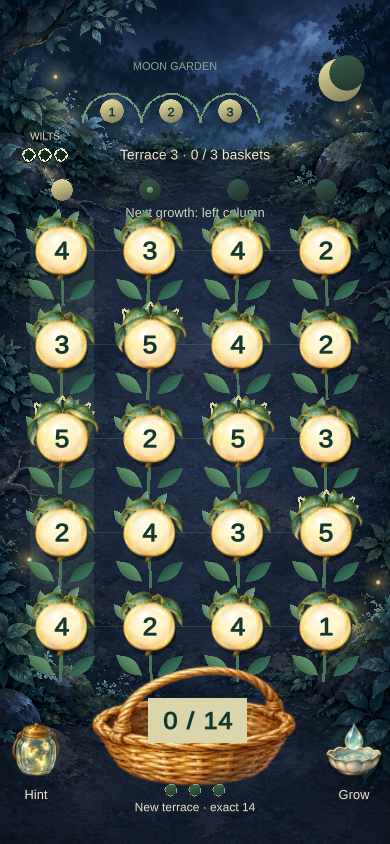

BAMBOO
ABA Games / Kenta Cho
Borrowed
Growth creates a harvest opportunity and an overgrowth threat.
Same sum. Different tomorrow.
Trace fruit into an exact-sum basket. The same cut protects those roots while the next moonlit column grows—and may wilt.

Two specific mechanisms, combined into one player decision.
ABA Games / Kenta Cho
Growth creates a harvest opportunity and an overgrowth threat.
ABA Games / Kenta Cho
A neighboring number route forms an arithmetic batch.
Reference research captures · framed for clarity; click for full images. Source claims, credits & provenance ↗
The mutation changes what you must weigh up on each move.
Example: target 10; the left column grows next. An uncut 5 wilts; harvested roots replant at 1 and skip that growth.
Illustrative rule diagram · selectable comparison, not a game simulation.
This connected route sums to 10 but leaves the leftmost ripe 5 uncut. It wilts on the growth tick.
This other connected route also sums to 10. Harvest the ripe 5 before the same column grows.
One portrait field. One short offline round. Immediate retry.
Basket target + growth column
Backtrack freely; preview the sum
Exact release commits the cut
Uncut column ripens; next basket
Design hypotheses to test with you; automated completion does not establish enjoyment.
Two valid answers can leave very different gardens.
No real-time penalty; undo the route before committing.
Your solution fills a basket and keeps a vulnerable plant alive.
Do you notice the growth forecast before your first avoidable wilt?